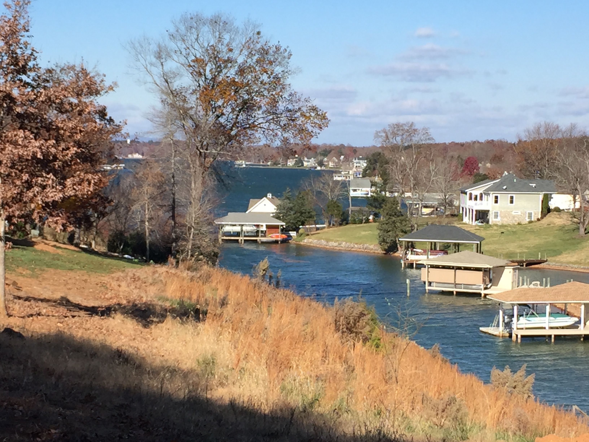
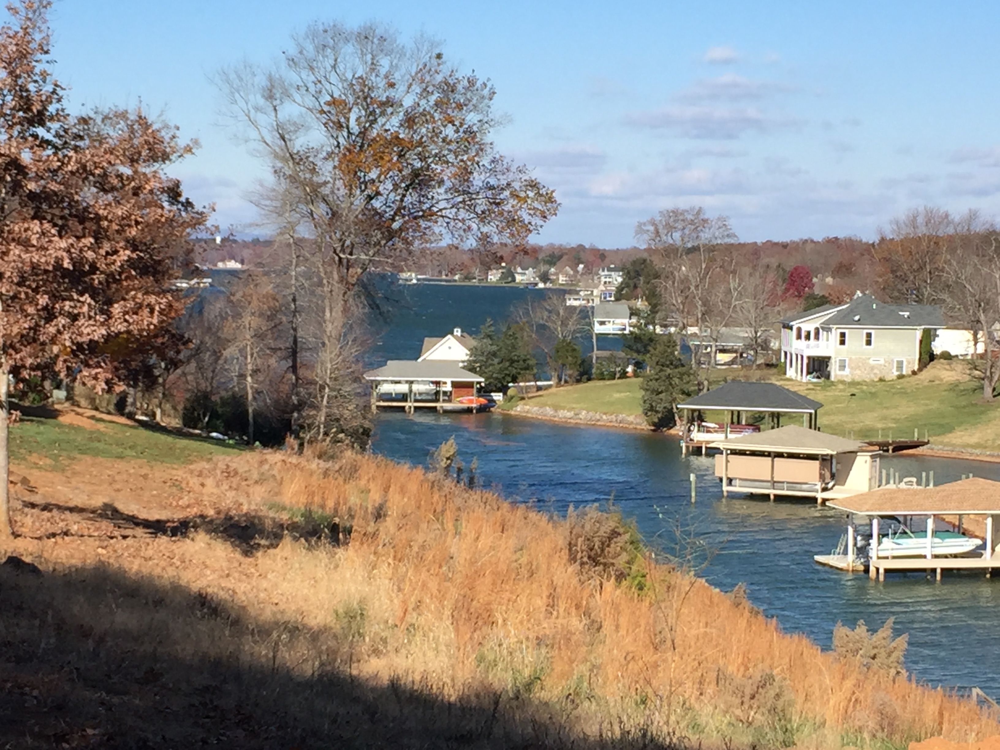

Surveys

Emergency Services

Employment
Macon County Government is dedicated to hiring and retaining progressive, well-qualified, and motivated employees. We offer equitable salaries and excellent benefits to talented, competent individuals who can contribute to County Government through employment. Outstanding professional service to the public is our goal. https://maconnc.org/job-listings.html
Surveys
Emergency Services

Employment